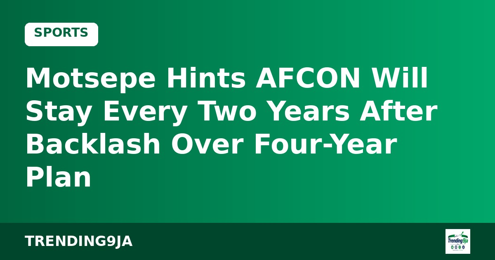
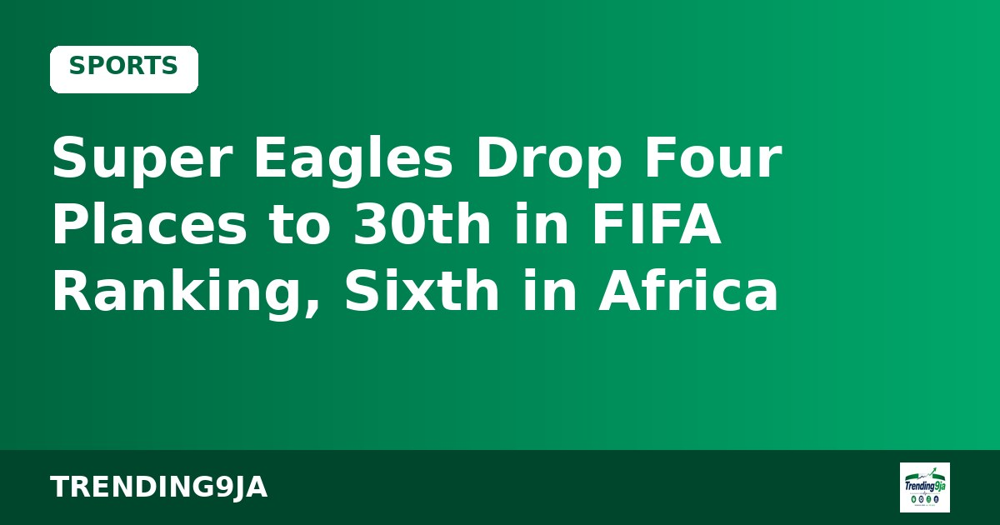
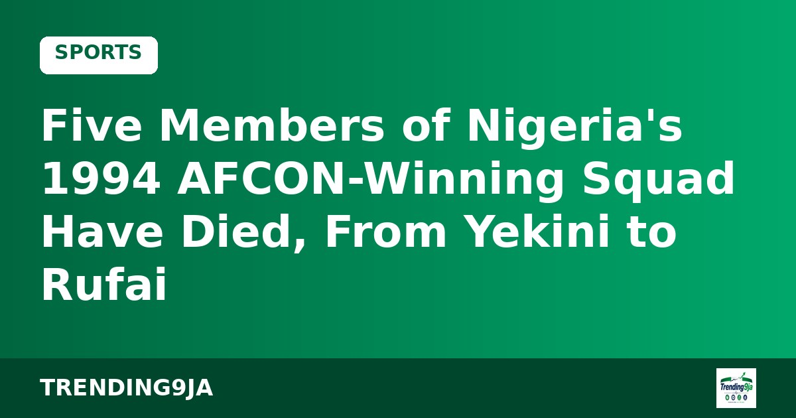
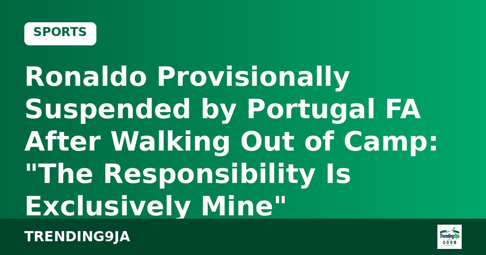

Super Eagles Drop Four Places to 30th in FIFA Ranking, Sixth in Africa
Akor Adams says the squad accepts responsibility for the Guinea-Bissau defeat.

The Confederation of African Football (CAF) is reconsidering its plan to hold the Africa Cup of Nations every four years. CAF president Patrice Motsepe said the tournament may stay as a biennial event, a reversal of the plan he announced in December 2025 to move to a four-year cycle from 2028.
The switch had been meant to align AFCON with FIFA's international calendar, but many people at the 2025 AFCON in Morocco criticised it as serving European interests over African ones. Speaking on the final day of CAF's strategy conference in Cape Verde, Motsepe rejected claims that CAF takes orders from FIFA or UEFA as "nonsense, absolute rubbish." "My No. 1 job, my No. 1 duty is to protect, promote, and advance the interests of Africa," he said.
He confirmed that the 2027 AFCON will go ahead as planned in Kenya, Tanzania and Uganda, despite French media reports of construction delays and some members wanting to move the tournament. "You have to believe in Africa," he said. CAF's 54 members also unanimously backed FIFA president Gianni Infantino.
Every two years or every four? Tell us with #Trending9ja
Sources: Al Jazeera (AP)
← More Sports stories
Akor Adams says the squad accepts responsibility for the Guinea-Bissau defeat.

A look back at the heroes of Tunisia 1994 who are no longer with us.

The 41-year-old captain apologised, saying coach Jorge Jesus "broke his word" over his role against Norway.
A FIFA presidency challenge and a big new contract at the Emirates.

Poverty has stabilised for the first time since 2019 and reserves hit $53.8bn, per the presidency's reading of the October update.